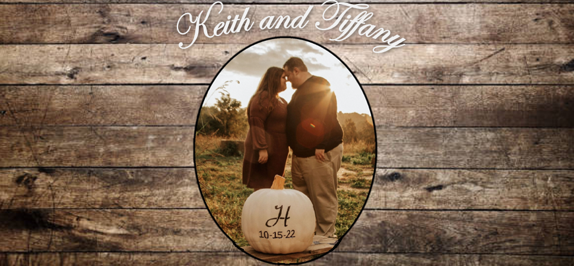

Nowadays many people use dating websites, and for two young adults who had their fair share of bad luck dating people they knew from school or mutual friends, Keith and Tiffany were no different. They had used these sites before, often as a last resort after a bad first date or from desperation, even though most of the profiles they viewed were people they had nothing in common with. The week before Valentine’s Day in 2017, Keith got a few messages from girls he assumed were just desperate for a Valentine's Day date. However, one of those girls was Tiffany. He knew right away she was different. Even though her profile was similar to ones he'd seen, he decided to stop being judgemental and just go for it and he messaged her back. They talked for about a week and decided to go on a real date. Both of them sensed a comfort from the other that made them trust each other and they were both unusually eager to go out. And so, the Saturday before Valentine’s Day, they went out. They had a good time, going to a winery and to dinner. During the drive to the winery, Keith nervously unfolded a piece of paper that had scribbled directions to Villa Antonio Winery, since he didn’t even have a smart phone then. Little did he know, as he struggled to turn down the winding country roads, Tiffany smiled and quietly led him right to the venue because she actually grew up on those roads. After a fun evening, Keith dropped Tiffany off and they went their separate ways. He texted her later that night saying he had a great time and so did she. That was the first clue that they wanted to see each other again. So they did - the very next day.
They met at a quiet park in Festus; Tiffany brought her dog Sophie, Keith brought flowers that he hid in his truck until the right moment. After a while of talking on a baseball dugout bench and getting to know each other, Keith said he’d be right back and came back from his truck with flowers and gave them to Tiffany and said, “Since we probably won’t see each other on Valentine’s Day.” And although the didn't see each other on Valentine's Day since they both worked, they continued to see each other every weekend for the next few months and eventually became a couple. After a year, they moved into a small apartment together in Fenton. After 3 ½ years of dating, Keith met Tiffany at the same park (with the help of Tiffany’s cousin and sister-in-law) and showed her a video of Tiffany’s closest family and friends giving their blessing. After she watched it, Keith was sitting at the same bench they first kissed. They talked for a while, just like they did 3 ½ years before, and he said he’d be right back once again. This time, instead of flowers, he was holding a ring.
Keith and Tiffany are blessed to have everything they could ever need for their household. They don't expect it, but are accepting donations to their Honeyfund account. You can find it here. All donations go to their honeymoon at Sandals Royal Bahamian resort! They appreciate every cent that is given and know that it wouldn't be possible to share this once-in-a-lifetime experience without generous donations from their friends and family. There will also be a Honeyfund donation box at the reception. Thank you so much.
*Rooms blocked at Baymont Inn under Keith Huels